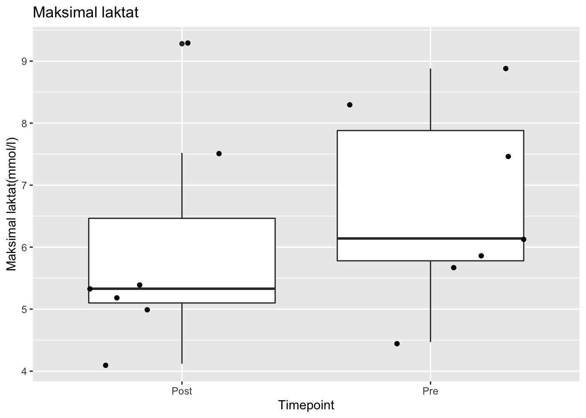

Warning in data("data_run_2"): data set 'data_run_2' not foundRows: 14
Columns: 12
$ FP <dbl> 1, 1, 2, 2, 3, 3, 4, 4, 5, 5, 6, 6, 7, 7
$ Gender <chr> "Male", "Male", "Female", "Female", "Male", "Male", "Male",…
$ Timepoint <chr> "Pre", "Post", "Pre", "Post", "Pre", "Post", "Pre", "Post",…
$ Age <dbl> 24, 24, 50, 50, 23, 23, 29, 29, 25, 25, 23, 23, 23, 23
$ Height <dbl> 195, 195, 169, 169, 175, 175, 180, 180, 191, 191, 171, 171,…
$ Weigth <dbl> 86.0, 86.0, 56.1, 56.1, 81.9, 81.9, 93.4, 93.1, 80.7, 79.9,…
$ start.load <dbl> 10.0, 13.0, 8.5, 8.5, 8.5, 8.5, 12.0, 10.0, 8.5, 8.5, 8.5, …
$ end.load <dbl> 19.0, 19.0, 11.5, 11.5, 16.0, 14.5, 15.0, 15.0, 14.5, 14.5,…
$ VO2.max <dbl> 5293, 5224, 2239, 2290, 4525, 3937, 4527, 4613, 4179, 4201,…
$ lac.max <dbl> 8.31, 5.33, 5.68, 5.20, 6.14, 5.00, 4.47, 4.12, 7.45, 5.41,…
$ HR.max <chr> "196", "201", "168", "169", "182", "180", "180", "175", "NA…
$ RER.max <dbl> 1.00, 1.01, 0.99, 0.96, 1.01, 1.03, 0.96, 0.99, 1.10, 1.20,…